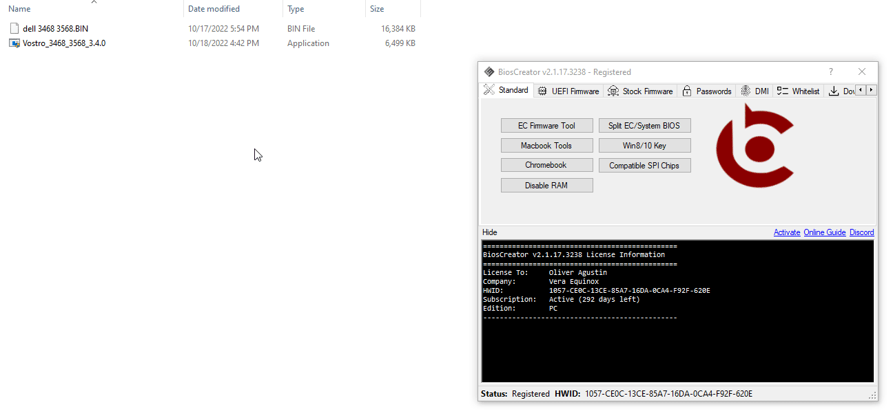
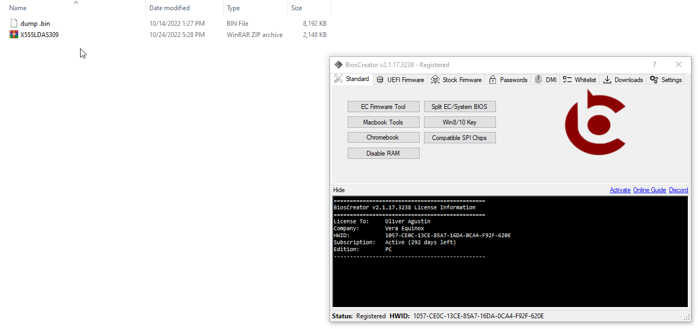

<style>
    .center {
        display: block;
        margin-left: auto;
        margin-right: auto;
        width: 50%;
      }

    a {
      text-decoration: none;
      display: inline-block;
      padding: 8px 16px;
    }
    
    a:hover {
      background-color: #ddd;
      color: black;
    }
    
    .previous {
      background-color: #f1f1f1;
      color: black;
    }
    
    .next {
      background-color: #160042;
      color: white;
    }
    </style>

<section class="support section bg-gray">
	<div class="container">
    <div class="container" style="text-align:justify; margin-bottom:50px;">
      <h4 class="join">How to repair or replace corrupted bios region?</h4>
      <p>There are some situations that after you cleaned/upgraded/downgraded the ME region, the laptop exhibits the same symptoms as before. In this scenario, there is a possibility that the BIOS region or is faulty.</p>
      <br>
      <li>No display or No power even after cleaning, upgrading/downgrading the ME/TXE region
      <li> Extracted firmware is less than the backup firmware size (e.g., 6144kB) which are common in the following laptop brands:
      <b><li>Dell for newer models</li></b>
      <b><li>Asus laptops</li></b>
      <b><li>Acer laptops</li></b>
      <br>

      <p>Go to this section if you want to repair or clean the ME/TXE region.</p>
   
      <h2><b>Examples</b></h2>
      <p><b>Dell</b></p>
      <p>Mostly for Dell laptops, especially newer ones, you need to extract the firmware first using the Dell extraction method to obtain the BIOS, ME and EC firmware as shown in the example below. After that, you then use the Repair BIOS Region button to replace the BIOS REGION of your firmware dump.</p>
      
      <br>
      <p><b>Asus</b></p>
      
      <br>

      <a href="{{ site.baseurl }}/faq/clear-nvram" class="previous">&laquo; Previous</a>
      <a href="{{ site.baseurl }}/faq/spi-compatible-chips" class="next">Next &raquo;</a>

		</div> <!-- End row -->
	</div> <!-- End container -->
</section> <!-- End section -->